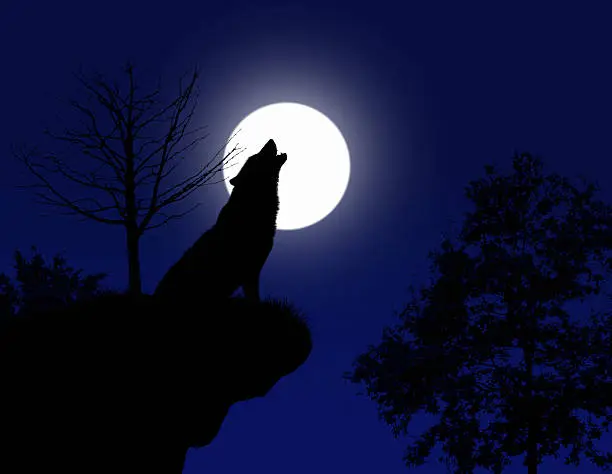
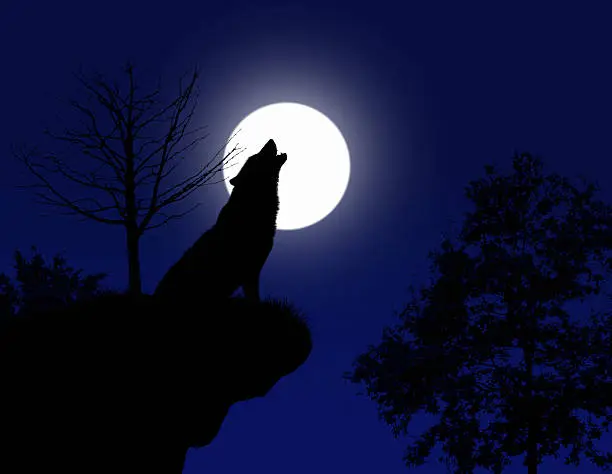

Black bear: a medium-sized bear endemic to North America. Kingdom: | Animalia Phylum: | Chordata Class: | Mammalia Order: | Carnivora Family: | Ursidae Genus: | Ursus Species: | americanus The black bear is the most common bear found in the forests of North America, including parts of Mexico. There are 16 subspecies of black bears
Black bears are the smallest of the three bear species found in North America. Black bears can range from 50 to 80 inches, from nose to tail. On all fours, they have a height of about 2-3 feet. Like brown bears, black bears exhibit sexual dimorphism with males being larger than females. Male black bears tend to be anywhere from 20 to 60% larger than female black bears. Males generally weigh between 125 to 500 pounds, while females weigh in at about 90 to 300 lbs. The heaviest bear on record was found in North Carolina in 1998, weighing in at 880 lbs.
While many black bears do have black fur, coats can be brown, blonde, cinnamon, and in rare cases, even white. Black bears with white fur are known as Kermode bears and are found only in and around the coastal areas of Canada. The black bear is large and stocky and has a short tail. The head is small but is supported by a strong neck. The ears are small and rounded. Black bears have short, non-retractable claws that enable them to easily climb trees. Cubs can climb trees when they are as young as 6 weeks old. Compared to brown bears, black bears have smaller, more tightly curved claws
Black bears are omnivores. Their diet primarily consists of berries, grasses, nuts, and insect larvae, and they relish honey when they find it. They will also occasionally eat small mammals and fish when available. All bears are very intelligent and resourceful. Black bears are especially opportunistic when it comes to feeding, and those that live near urban areas will raid trashcans or bird feeders for food. Feeding bears is always a bad idea, as bears that become habituated to human food can become dangerous. To prepare for hibernation, bears need to gain a sufficient amount of weight. Gaining enough weight is particularly critical for pregnant females in order to guarantee successful reproduction and the health of her cubs. Malnourished females often have failed pregnancies or newborns that do not survive due to a lack of milk
Black bears live in forests that contain a wide variety of fruits and berries, as well as in marshes and wetlands. Females prefer areas with trees for her cubs to climb while she searches for food. Black bears are highly adaptable and so are also successful in and around urban areas, where they are increasingly seen in residential neighborhoods where human and bear habitats overlap
Black bears are found exclusively in North America and, thanks to their adaptability, are one of the most widely distributed large mammals on the continent. Estimates of their numbers in North America range as high as 900,000. Historically, black bears were found throughout the forests of Canada, Alaska, the Lower 48, and parts of Northern Mexico. Today they are still found in parts of Canada, as many as 40 states, and small pockets of Northern Mexico.
Black bears mate in the summer, from late May into July or August. During this time, females travel extensively around their territory, leaving a scent trail as they move, which males use to monitor the females’ receptiveness. Once paired, males and females have been known to stay together for up to nine days, after which they both move on in search of new mates. Fertilized eggs float in a female’s uterus for months before implanting in the uterine wall, usually in November, at which time fetal development progresses. The cubs are born in January or February during hibernation. Females wake for the birth and stay alert enough thereafter during the hibernation period to care for them in the den. Black bears have been known to have up to 6 cubs, but most females have only 2. Newborn cubs are blind, toothless, and weigh only a pound. They are born with blue eyes but within the year their eyes turn brown.
Black bears can live up to 30 years or so in the wild, and longer in captivity


 
